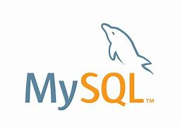

Gerenciamento de tarefas administrativas...

Tenho Excel nível intermediário.

Matplotlib Nível Avançado

PowerPoint Nível Intermediário

Word Nível Intermediário

Sou capaz de desenvolver aplicações web e de escritórios úteis usando Python.

Sou capaz de desenvolver scripts úteis para website voltados para frond-end e node para usar como servidor local.

Sou capaz de desenvolver sites úteis para web, sites estáticos e de exibição.

Faço sites responsivos e profissionais usando bootstrap.

Uso Netlify para testar sites html-ccs, bootstrap, sites com ou sem scripts do javascript, ou até mesmo para trabalho.
Uso Heroku para testar aplicações Python-Flask, ou até mesmo para trabalho usando aplicações úteis.

Campanhas digitais e otimização SEO... Google Search console, Site maps, Instagran, Facebook

- Search Engine Optimization (SEO) - Em PT: Otimização para motores de busca

Google Analytics - Análise de tráfego de sites...

PYTHON e FLASK para analisar dados de maneira eficiente e com perfeição, também coletar e limpar dados com precisão. usando bibliotecas que facilitam o processo em 100%

Para manipular dados e usá-los em consultas complexas de dados.

Para armazenar dados de maneira simples e organizada.
Biblioteca Chart e Leaflet, para demonstração gráfica de dados.

Outlier - geração de áudio para I.A Português para Inglês

Agente de viagens - Auxiliando pessoas a conseguir passaporte com planos de cursos
Assistente virtual - Writer translator freelancer pessoal de um amigo americano

Auxiliar de serviços gerais - descarregando produtos de caminhão

Ajudante de pedreiro - Ajudando a encher carrinho de areia, pegar cimentos, baldes de cimentos
PROJETOS: PYTHON
Agendas comuns com banco de dados.
Formulários com banco de dados, com hora e despertador.
Leitor PDF com áudio.
Script para enviar mensagens de Email com body responsivo para mais de 20.000 pessoas "dependendo da quantia de Emails é possível até mais".
Tradutor de áudio para txt, rtf ou srt.
Transformador de textos em áudios speach voz humana ou robótica, ou semelhante a humana.
Árvore de decisão e regressão linear.
Machine Learning.
Machine Learning com estatística e probabilidade.
Regressão linear.
SRT para áudio em qualquer idioma.
Cortar bordas de vídeos.
Transformar texto em PDF.
Transformar texto UTF-8 em texto cp1235.
Formulários com banco de dados, com hora e despertador.
Planilhas de Despesas.
Dashboard gráficos.
Dashboard semidinâmico.
Relógios.
Calculadora.
App semelhante ao Wordpad.
App de edição de vídeos.
PROJETOS: FLASK
Formulários com banco de dados.
Aplicação de Chat com banco de dados, possível enviar fotos e vídeos.
Aplicação escreva a sua história, foto história, salvasse com banco de dados.
Dashboard leitor de planilhas Excel.
Dashboard informador de dados de planilhas excel e csv.
Login com banco de dados.
Formulário Dashboard online com Dash.
Informação de Dados.
PROJETOS: HTML-CSS
BOOTSTRAP
JAVASCRIPT
Site de curso para 25 idiomas diferentes.
Lojas de roupa.
Loja de artigos religiosos.
Formulário Pessoal.
Site de conteúdo adulto.
Site de jogos.
Portifólio pessoal com login e senha.
Site para Clínica.
Site para Oficina.
Planilha de cálculo de despesas.
Relatório de dados exemplo.
ANÁLISE DE DADOS "REGRESSÃO LINEAR E TESTES"
ANÁLISES FEITAS COM PYTHON, MYSQL E EXCEL
EXIBIÇÃO DE RELATÓRIOS GRÁFICOS FLASK
, BOOTSTRAP, JAVASCRIPT
CONHECIMENTOS E CAPACIDADES ABAIXO
Experiência com Modelagem Estatística.
statsmodels e scikit-learn.
Gestão e Manipulação de Bancos de Dados MYSQL.
Realização de análise estatística básica Excel.
Criação de dashboards interativos e relatórios dinâmicos Matplotlib, Chart e Leafle
Contato
Entre em contato comigo por email.
Ou converse comigo através do WhatsApp.